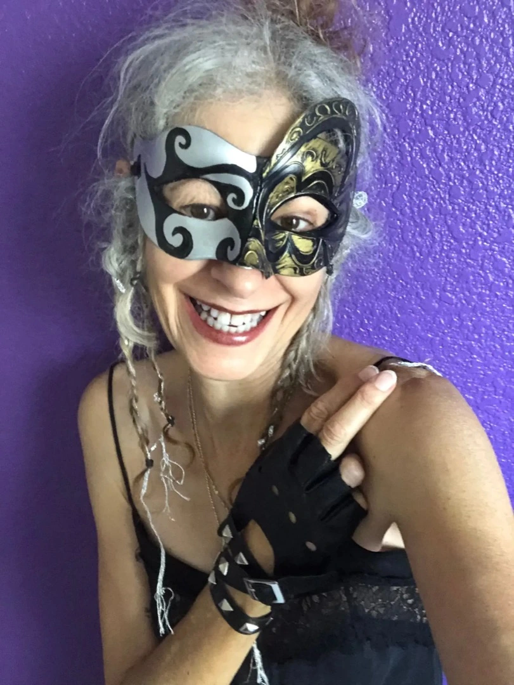
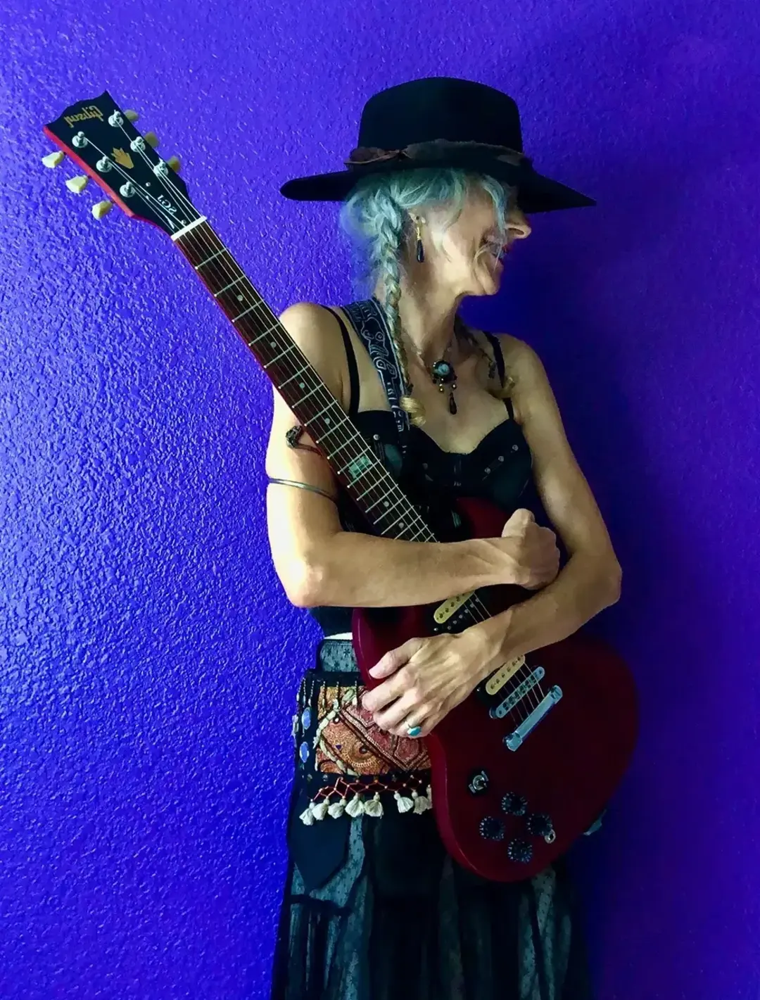

Blancah Black (AKA Hillary Fielding) was raised in Los Angeles, USA on Classical and Jazz ballads, as the phonograph had been around for some time and music was a big part of family life. She was also drawn to Opera such as La Bohème and the schmalz of Tony Perkins and Doris Day played innumerable times on Mama’s turntable. Inspired by these masterpieces, she acquired a taste for the tragic at an early age. She took up the ukulele and treholipee at age 8 and wrote her first song, “Once There was a Horse and His Name was Clop.” Blancah sat next to Papa, Composer Jerry Fielding (RIP) in his Hollywood studio. She was 15. He spun a few albums for her; the music of Bela Bartok and Karlheinz Stockhausen, and discussed with her the advent of 20th century modern composition. From that moment on a fire ignited and she began a love affair with the avant garde. The Written Word and Sound Produced have led her on a lifetime journey.
Suddenly one day there was punk and by this time she had been playing electric guitar for several years. Blancah Black woke up one morning in Santa Cruz, CA, and with Maryjean Shaffer started HoLY SIstERs of the GAga DaDA. Blancah plays guitar, electronics, and voice; creates and performs songs. She was a founding member of one of the most unusual Women’s Punk/New wave bands in the 1980’s, The Holy Sisters of the GAGADADA, as well as a member of The Philosophers, BCO, Feathered Edge, The Eddie Gale Ensemble, Ovaryaction, Venus Envy, Female Noise, Dangerous Mother, ololo, blacklava, bleeding fields and Rivas & Black. Several hundred songs later she’s still at it. The girl can’t help it.
Blancah Black (AKA Hillary Fielding)

